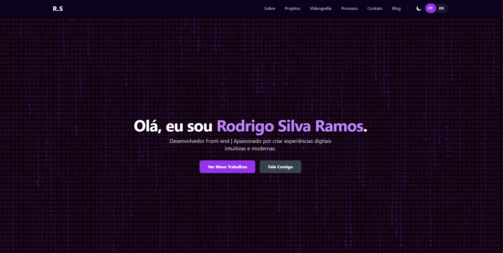

Why I Chose a Static Site for My Portfolio
Published on June 29, 2025 • 5 min read
When planning a new site, one of the first technical decisions is the choice of platform. Many paths lead to content management systems (CMS) like WordPress, which are incredibly powerful tools. But what if for a portfolio, the simplest and most 'classic' approach was, in fact, a more modern and efficient one?
In this article, I'll explain why I made the conscious decision to build my portfolio from scratch using only pure HTML, CSS, and JavaScript—an approach known as a static site. I will detail the two main advantages that led me to this choice: unparalleled performance and robust security.
1. Static vs. Dynamic (The Analogy of the Book and the Chef)
Static Site (The Printed Book): Think of a static site as a printed book. Each page is already finished, complete, and waiting on the shelf (the server). When you ask to see it (by accessing the link), the server simply hands you the ready-made page. It's direct, fast, and there's no processing at the time of delivery.
Dynamic Site - WordPress (The Robot Chef): A dynamic site, like one made with WordPress, is like a robot chef with a recipe book and a giant pantry (the database). When you order a dish (visit a page), the robot has to go to the pantry, get the ingredients (text, images), consult the recipe book (the PHP code), assemble the dish on the spot, and only then serve it to you. This process happens with every single visit.
2. Advantage #1 - Unparalleled Performance
On the web, speed is crucial. A slow site frustrates visitors and is penalized by Google. Since a static site is the 'printed book,' there's no waiting time for the 'robot chef' to prepare the dish. The server finds the ready-made HTML file and sends it immediately. The result is an almost instantaneous load time.
The ultra-fast loading time of my portfolio and the fluidity of the animations you see are a direct result of this choice for simplicity and the efficiency of a static architecture.
3. Advantage #2 - Robust Security
The complexity of a dynamic site, with its application server, database, and plugin ecosystem, creates multiple 'doors' that can be attacked. WordPress, being the most popular platform in the world, is also the number one target for hackers looking to exploit vulnerabilities. .
A static site, on the other hand, has no database to be hacked or complex server-side code to be exploited. It is, in essence, just a collection of text files. Its 'attack surface' is drastically smaller, making it inherently more secure and much less prone to problems.
4. Other Benefits (Bonus)
Hosting and Cost: Hosting static files is much cheaper and, in many cases, free. Platforms like Netlify, Vercel, and GitHub Pages offer robust free plans for this type of site.
Total Control: Building from scratch gave me absolute control over every pixel and every line of code, allowing me to create the exact features and animations I wanted, without the limitations of a pre-made theme or plugin.
Conclusion
Although platforms like WordPress are fantastic tools for many scenarios, such as large news portals or e-commerce sites, for a personal portfolio, where the goal is to showcase my work with maximum performance and security, the choice for a static site was clear and strategic. This approach reflects not just a technical decision, but a work philosophy that I apply to everything I do: focus on the essential, optimize the experience, and have complete control over my craft—whether it's writing code or editing a video.